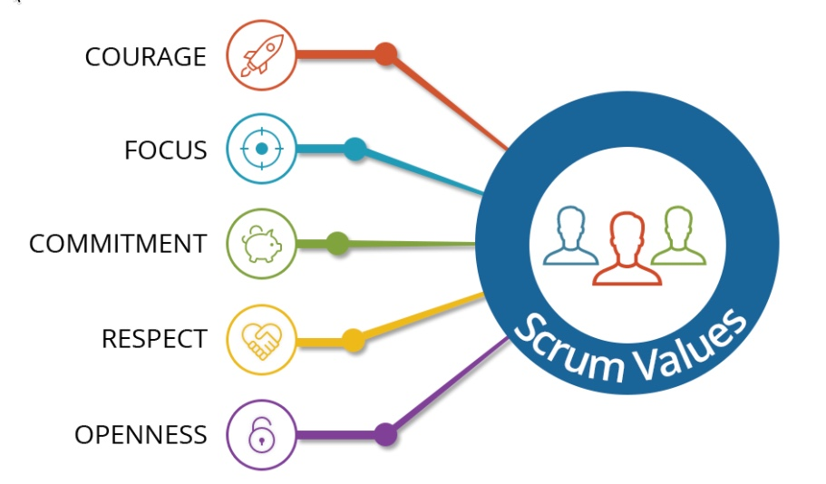

This is the Website for the Group project A4
Place text content in here.
Values of Scrum
The Scrum made an update to the SCRUM Guide in 2016, so it has had a new section, SCRUM Values.

Courage
While working together as a team on a project, we would find out many mistakes including our own mistake. We know the fact that nobody is perfect and everybody can make mistakes and do something wrong, but it is hard to admit that we are the one who made that mistake or who was wrong. This needs Courage.
Focus
Scrum helps users to focus on a project with an iterative-incremental approach. We focus on the work of the Sprint in the present and how to make a desirable outcome.
Commitment
The Scrum team has a goal to make a project successful. Each members of the team then commits to collaborate, be professional, help each other, and do the best they can to achieve the goal.
Respect
There could be some disagreement or conflict when we are working in a team. We could have to point out another member’s fault or even criticize him/her. However, we should do it in a respectful way and we should take others’ remark about our work well with a professional attitude.
Openness
Scrum requires transparency and openness. We should be open about our work as a team member, so it is needed to ask for help when we face challenges. Also, we are also to be open for people and ready to collaborate and work together.